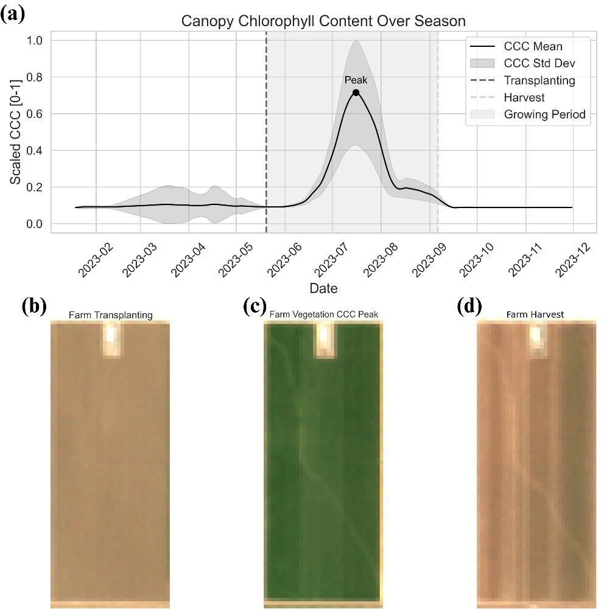
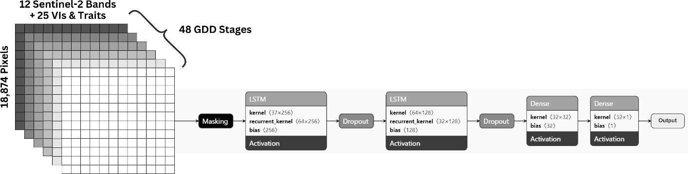
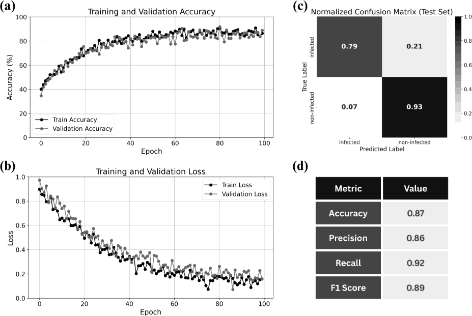
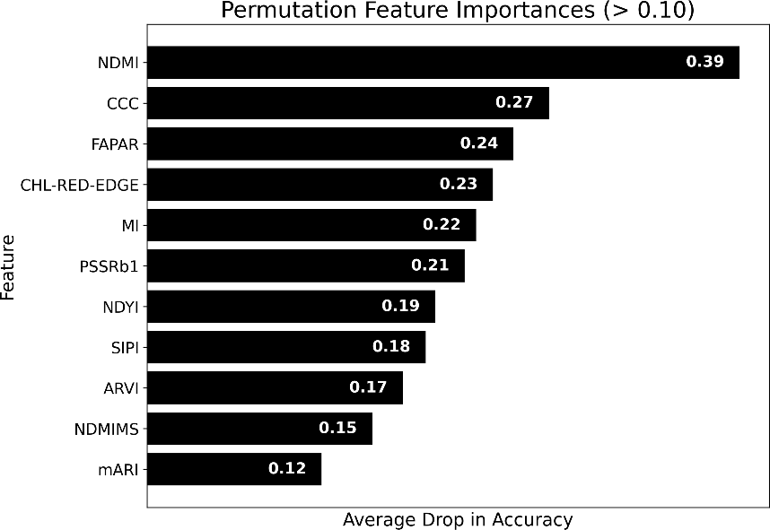
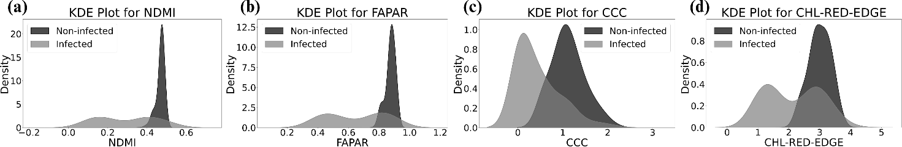

🛰️ Branched Broomrape Detection in Tomato Farms Using Satellite Imagery and Time-Series Analysis
SPIE 2025 — Autonomous Air and Ground Sensing Systems for Agricultural Optimization and Phenotyping X
Proceedings Vol. 13475, 134750U | Digital Agriculture Laboratory, UC Davis
Presented at SPIE 2025
This work was presented at SPIE Defense + Commercial Sensing 2025, Orlando, Florida, United States — Proceedings Volume 13475, Autonomous Air and Ground Sensing Systems for Agricultural Optimization and Phenotyping X, 134750U (2025). doi.org/10.1117/12.3059998

The Challenge
Branched broomrape (Phelipanche ramosa) is a chlorophyll-deficient parasitic plant that threatens tomato production by extracting nutrients from host roots, potentially reducing yields by up to 80%. Its lifecycle is largely underground, and each plant can produce over 200,000 seeds that remain viable for up to 20 years—making early detection essential. We built an end-to-end pipeline using Sentinel-2 satellite imagery and time-series analysis to identify broomrape-infested tomato fields at scale, complementing our drone-based and leaf-spectrometer work.
Data and Phenology
We compared five farmer-reported broomrape-infested tomato fields with five non-infested fields in the same region. Sentinel-2 imagery across the growing season was filtered for <10% cloud cover. We used 12 spectral bands plus sun/sensor geometry to compute 20 spectral vegetation indices (e.g. NDVI, NDMI, EVI) and to derive five plant traits from a pretrained neural network: LAI, Leaf Chlorophyll Content (Cab), Canopy Chlorophyll Content (CCC), FAPAR, and FCOVER. Seasonal CCC trends were used to identify transplanting, peak vegetation, and harvest—aligning phenology across fields. Figure 1 shows the CCC trajectory and representative imagery at transplanting, peak, and harvest.

Figure 1: (a) Seasonal scaled CCC with transplanting, peak, and harvest phases; (b)–(d) satellite imagery at transplanting, peak CCC, and harvest.
GDD Alignment, Vegetation Masking, and LSTM
We used Growing Degree Days (GDD) from the Open-Meteo API to align phenology across fields. Vegetation was segmented from soil and infrastructure using the five plant traits at peak stage (PCA + K-means), so only crop pixels were used. For each pixel we compiled 37 features (12 bands + 20 indices + 5 traits) across 48 GDD time steps. A two-layer LSTM (64 and 32 units, dropout, 39,617 parameters) was trained with five-fold cross-validation (65% train, 15% validation, 30% test, 100 epochs) to classify pixels as infected or non-infected. Figure 2 shows the LSTM architecture and input stack.

Figure 2: LSTM architecture and sequential processing of 37 features over 48 GDD stages.
Results
The model reached 88% training and 87% test accuracy, with precision 0.86, recall 0.92, and F1 0.89. High recall is important for reliably detecting infected pixels. Figure 3 shows training/validation accuracy and loss, the normalized confusion matrix, and the performance metrics.

Figure 3: (a) Accuracy; (b) loss; (c) normalized confusion matrix; (d) accuracy, precision, recall, F1.
Permutation feature importance identified NDMI (Normalized Difference Moisture Index), CCC, FAPAR, and CHL-RED-EDGE as the most influential—consistent with broomrape reducing water and chlorophyll. Figure 4 shows the importance ranking; Figure 5 shows kernel density plots at peak vegetation, with non-infected fields having higher values for these four features.

Figure 4: Permutation feature importance for broomrape detection.

Figure 5: Kernel density plots at peak vegetation—non-infected farms show higher NDMI, FAPAR, CCC, and CHL-RED-EDGE.
Publication and Citation
Narimani, M., Pourreza, A., Moghimi, A., Farajpoor, P., Jafarbiglu, H., & Mesgaran, M. (2025, May). Branched broomrape detection in tomato farms using satellite imagery and time-series analysis. In Autonomous Air and Ground Sensing Systems for Agricultural Optimization and Phenotyping X (Vol. 13475, pp. 237-243). SPIE.
Read full paper at SPIE Digital Library
DOI: 10.1117/12.3059998
Event: SPIE Defense + Commercial Sensing 2025, Orlando, Florida, United States.
Contact
Mohammadreza Narimani
PhD Candidate, UC Davis